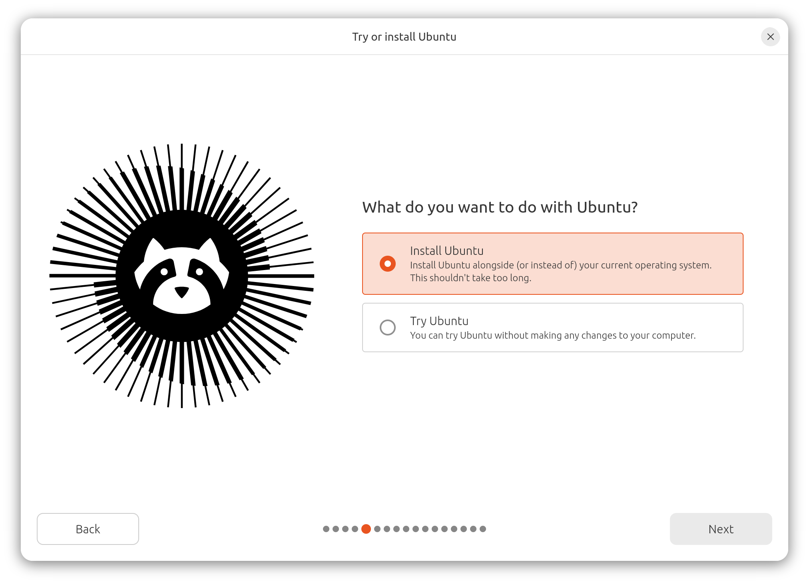

If you’re new to Linux, the easiest way to start is by using a beginner-friendly distro (short for distribution). Two of the most popular choices are Ubuntu and Linux Mint.
Ubuntu is a Linux distribution developed by Canonical. It is one of the most popular Linux distributions in the world and is often recommended to new users. Ubuntu has a large community, excellent documentation, and thousands of tutorials available online. Because so many people use it, finding help when you need it is usually easy. It is a solid starting point for anyone looking to learn Linux.

Linux Mint is a Linux distribution developed by the Linux Mint Team and based on Ubuntu. It is designed to be simple, stable, and easy to use, especially for people switching from Windows. Its familiar layout helps new users feel comfortable while still providing the flexibility of Linux. Linux Mint is known for its reliability and beginner-friendly approach. For many users, it offers one of the easiest transitions into Linux.

Zorin OS is a Linux distribution developed by the Zorin Group and designed to make switching from Windows as easy as possible. It includes a polished interface and familiar layouts that help new users get comfortable quickly It also includes a software support layer allowing you to run certain Windows apps. Zorin focuses on simplicity while still offering the performance and customization that Linux is known for. It is a great choice for people who want a modern and beginner-friendly desktop experience. Many features are specifically designed to help newcomers adapt to Linux.
No matter which distribution you choose, remember that Linux gives you freedom to experiment. You can always try another distribution later, and many of the skills you learn on one Linux system will carry over to others.

To try Linux, you usually need a USB drive and a computer you want to install it on. Most distributions let you boot into a “live” version first, which allows you to test Linux without making changes to your system.
At first, Linux might feel different if you are used to Windows or macOS, but most basic tasks like browsing the web, managing files, and installing apps work in a familiar way. Over time, it becomes easier as you learn how the system is structured and how to navigate it.